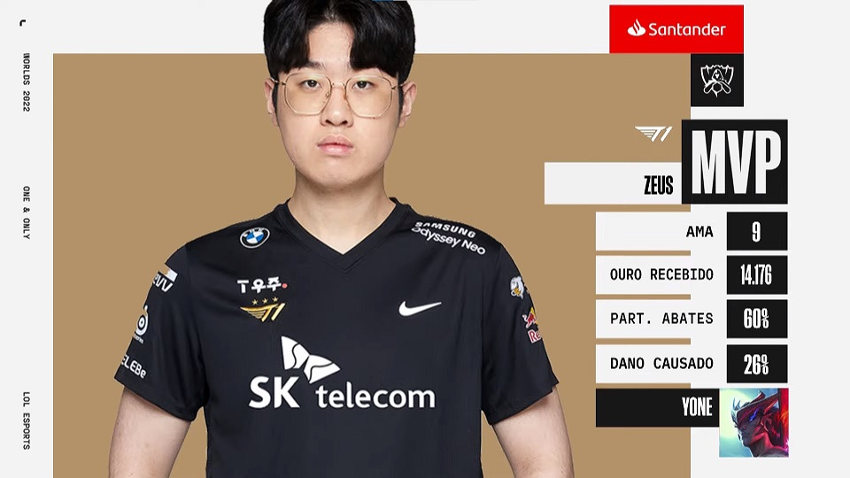
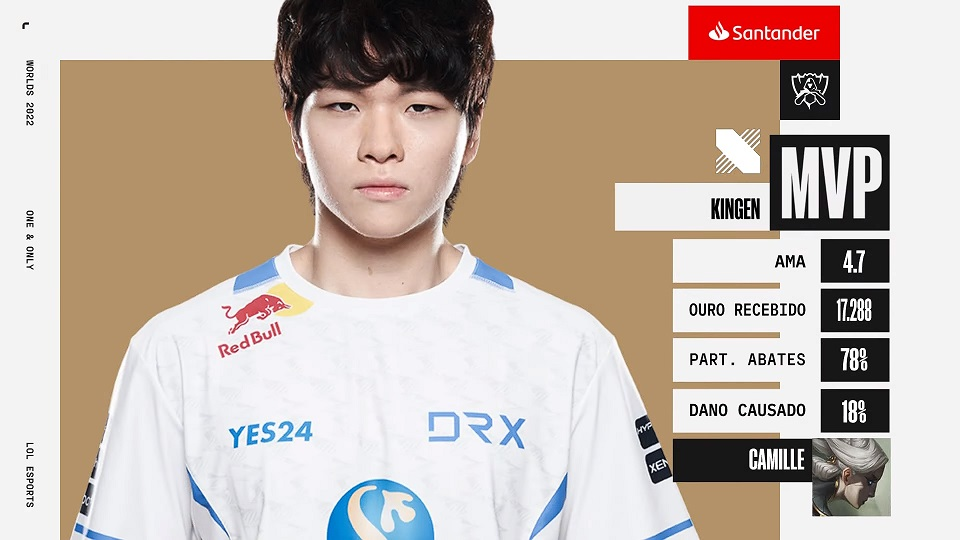
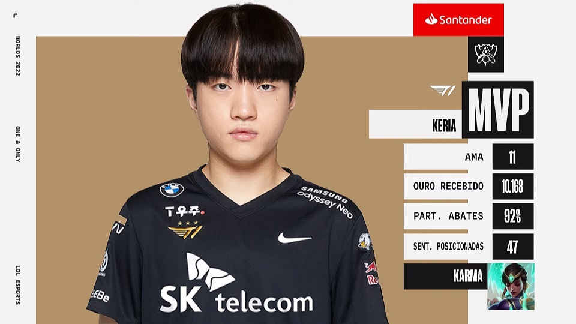
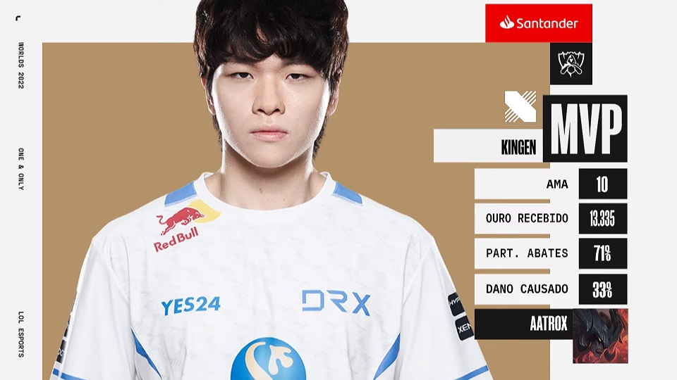

Após classificação difícil na LCK, vencendo duas MD5 de virada, a equipe coreana conseguiu classificação para a fase de entrada do campeonato mundial de League Of Legends, onde, sem muitas dificuldades, classifcaram invictos, em primeiro lugar, para a fase principal do evento. Com apenas duas derrotas, avançaram para a fase de mata-mata, onde venceram uma série emocionate contra a EDG, de virada, por 3-2. Depois, num confronto marcado por um evento que ocorreu no final do primeiro jogo, se classifcaram contra a GEN G, vencendo por 3-1, e finalmente bateram a poderosa T1 na final, por 3-2, numa também emocionante virada.
O atirador Kim "Deft" Hyuk-kyu, um dos principais jogadores da equipe, se emocionou ao falar sobre o título conquistado:
"Primeiro peço desculpa a todos por estar chorando assim, mas eu estou realmente sobrecarregado agora. Desde a minha estreia, em toda noite eu sonho comigo vencendo o campeonato mundial, indo à final e vencendo a última partida. Era só sonho, mas, agora, eu consegui isso. Eu estou muito feliz. E há uma coisa que eu queria dizer quando fosse campeão é que eu sou o melhor jogador do mundo, mas hoje, eu percebi que eu ser o melhor jogador não importa. É sobre o nosso time ser o melhor do mundo. E hoje nós somos o melhor time."
Com muita vantagem e destaque para o toplaner Zeus, que fez excelente partida de Yone, a T1 venceu sem grandes esforços o jogo 1, onde a DRX nao conseguiu levar nenhuma torre.
Em jogo disputado, T1 comete erros e Kigen e Deft brilham, garantindo vitória apertada para a DRX e empatando a série.
Com boa atuação do suporte Keria e jogo muito apertado, T1 vence e novamente pula na frente.
Com atropelo e destaque para a atuação do toplaner Kingen, que teve uma perfomance espetacular de Aatrox, a DRX venceu marcando o jogo mais rápido da série final.
Para fechar a série com chave de ouro e em jogo longo e disputado, Kingen brilha novamente de Aatrox e garante o título para DRX.